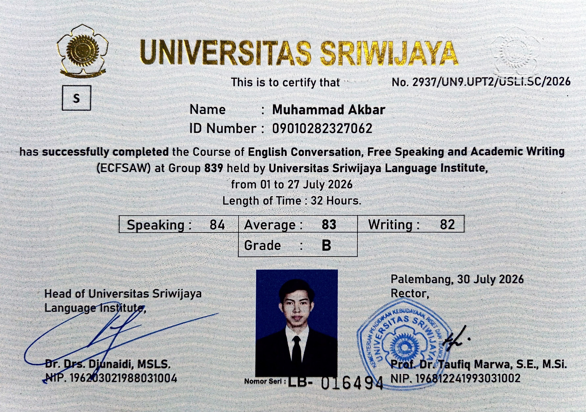

2026English Conversation, Free Speaking and Academic Writing (ECFSAW)
UPT Bahasa Universitas Sriwijaya
Pelatihan intensif kefasihan percakapan bahasa Inggris, teknik public speaking, serta penulisan akademik formal untuk menunjang komunikasi profesional.
Lihat Sertifikat